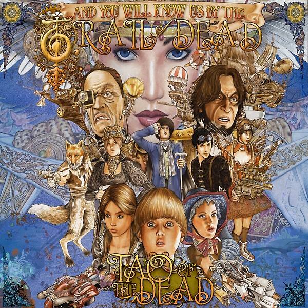

Albums of 2011
10
Mogwai
Hardcore Will Never Die, But You Will
Atmospheric instrumental rock.
9
Tycho
Dive
Beautiful, intelligent electronic music with plenty of melody and soul.

8
And So I Watch You From Afar
Gangs
Thrashing, fun, upbeat instrumental rock from Ireland's finest.
7
King Creosote & Jon Hopkins
Diamond Mine
Dreamy folk infused with electronica. Warming yet wistful. Jon Hopkins never fails.

6
Frank Turner
England Keep My Bones
English folk music about... er... England. Varies from upbeat rowdiness to yearning regret.
5
...And You Will Know Us By The Trail of Dead
Tao of the Dead
Return to form for the Trail of Dead lads, with a more progressive rock style album.

4
Youth Lagoon
The Year of Hibernation
Powerful, lump-in-the-throat inducing intimate dream pop.
3
M83
Hurry Up, We're Dreaming
Ridiculously epic electronica with plenty of anthemic qualities.

2
Bon Iver
Bon Iver, Bon Iver
Beautiful indie folk in a perfectly constructed album. Seeing these guys live was my highlight of the year.
1
The Antlers
Burst Apart
A fantastic follow-up to the amazingly heart-wrenching "Hospice" - whilst not topping said album (I'm not sure
anything ever could), "Burst Apart" continues to show The Antlers' ability to write fantastic songs with intelligent
poetic lyrics.